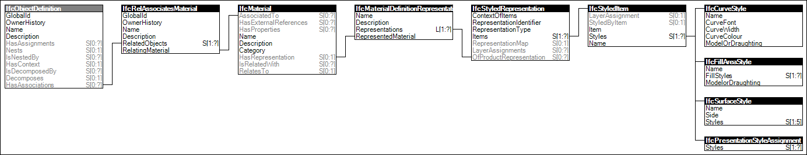

Materials are directly associated with products and product types to indicate a uniform material for the entire object.
Figure 23 illustrates an instance diagram.

Figure 23 — Material Single
Link to this page
 Link to this page
Link to this page